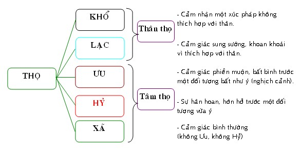

|
PHẬT GIÁO NGUYÊN THỦY THERAVÀDA VI DIỆU PHÁP BAN HOẰNG PHÁP |
|
BuddhaSasana Home Page |
Vietnamese, with Unicode VU Times or CN-Times font |
|
|
PHẬT GIÁO NGUYÊN THỦY THERAVÀDA VI DIỆU PHÁP BAN HOẰNG PHÁP |
|
Xin lưu ý: Cần có phông UnicodeViệt-Phạn VU Times hay CN-Times cài vào máy để đọc các chữ Pàli. |
|
BÀI 13. SỞ HỮU TỢ THA Sở hữu tợ tha là những sở hữu không có đặc tính riêng biệt, chúng mang đặc tính của tâm mà chúng phối hợp; nếu hợp với tâm Thiện, thì đặc tính của chúng là Thiện; nếu hợp với tâm Bất Thiện, thì đặc tính của chúng là Bất thiện; nếu hợp với tâm Vô Ký, thì đặc tính của chúng là Vô Ký. Sở hữu tợ tha được chia ra làm hai loại: I. Sở Hữu Biến Hành (Sabbacittasādhāranā) Sở hữu biến hành là những sở hữu có mặt trong 121 tâm, không một tâm nào có thể thiếu các Sở Hữu này; gồm có 7 Sở Hữu: 1. Xúc (Phassa): Chữ Phassa xuất phát từ ngữ căn Phas = xúc chạm. Sở hữu xúc là sự xúc chạm của chủ thể với đối tượng (về mặt vật chất hay tinh thần); sự xúc chạm của tâm với cảnh gọi là xúc (Ārambhaṃ Busatiti = Phasso). Căn, Trần (Cảnh) và Thức gặp nhau gọi là Xúc (Vatthu ca Viññāṇaṃ ca Ārambhaṃ phusa tīti = Phasso). Thí dụ: hai bàn tay chạm nhau phát ra tiếng kêu. Hai bàn tay như căn và cảnh, chỗ chạm nhau là xúc, tiếng kêu ví như tâm thức. Sở Hữu Xúc được phân làm sáu loại: Nhãn Xúc (là Sở Hữu Xúc hợp với Nhãn Thức do Mắt (Nhãn Căn) và Cảnh Sắc đối chiếu nhau). Nhĩ Xúc (là Sở Hữu Xúc hợp với Nhĩ Thức do Tai (Nhĩ Căn) và Cảnh Thinh đối chiếu nhau). Tỷ Xúc (là Sở Hữu Xúc hợp với Tỷ Thức do Mũi (Tỷ Căn) và Cảnh Khí đối chiếu nhau). Thiệt Xúc (là Sở Hữu Xúc hợp với Thiệt Thức do Lưỡi (Thiệt Căn) và Cảnh Vị đối chiếu nhau). Thân Xúc (là Sở Hữu Xúc hợp với Thân Thức do Thân (Thân Căn) và Cảnh Xúc (Ðất, Lửa, Gió) đối chiếu nhau). Ý Xúc (là Sở Hữu Xúc hợp với Ý Thức khi Ý Quyền (Ý Căn) và Cảnh Pháp đối chiếu nhau). Cho nên Pālī chú giải như sau: - Chơn tướng của sở hữu xúc là sự chạm nhau. - Phận sự của sở hữu xúc là tâm tiếp xúc với cảnh. - Sự thành tựu của sở hữu xúc là tâm, căn và trần hợp lại. - Nhân cần thiết của sở hữu xúc là có cảnh hiện ra. 2. Thọ (Vedanā): Chữ Vedanā dịch là Thọ, xuất phát từ ngữ căn Vid = thọ lảnh. Thọ là trạng thái tiếp thu, cảm nhận đối tượng qua lục căn. Chính thọ đóng vai trò cảm nhận một kết quả Thiện hay Bất Thiện chớ không phải có một linh hồn cảm thọ. Nên có chú giải "hưởng cảnh gọi là thọ" (Vedayatiti = Vedanā). Thí dụ: như một người ra sức làm việc tạo nên tiền của, tài sản, sự nghiệp. Về sau, khi lớn tuổi, người đó sống thỏa thích với tài sản mà mình đã tạo. Thỏa thích với tài sản đã tạo ví như sở hữu thọ vậy. Thọ được chia làm năm thứ: Thọ Khổ: là những cảm giác khó chịu vì không thích hợp với thân . - Chơn tướng của thọ khổ là thân xúc chạm cảnh xấu (cảnh không hợp với thân như nóng quá, lạnh quá, chật chội, ..). - Phận sự của thọ khổ là làm cho các pháp đồng sanh với nó khó chịu. - Sự thành tựu của thọ khổ là thân đau đớn. - Nhân cần thiết của thọ khổ là có thần kinh thân (da). Thọ Lạc: là những cảm giác khoan khoái do sự thích hợp với thân. - Chơn tướng của thọ lạc là thân xúc chạm cảnh tốt (cảnh vừa ý, hạp với thân). - Phận sự của thọ lạc là làm cho các pháp đồng sanh với nó thích hợp. - Sự thành tựu của thọ lạc là thân cảm thấy sung sướng, dể chịu. - Nhân cần thiết của thọ lạc là có thần kinh thân. Thọ Ưu: Là cảm giác buồn bực của tâm vì gặp cảnh bất như ý. - Chơn tướng của thọ ưu là cách tiếp nhận nghịch cảnh. - Phận sự của thọ ưu là chuyên bắt cảnh trái ý. - Sự thành tựu của thọ ưu là tâm thổn thức. - Nhân cần thiết của thọ ưu là có sắc ý vật (Hadayavatthu). Thọ Hỷ: là trạng thái dễ chịu, an vui; tâm hân hoan, thích thú vì tiếp xúc cảnh ưa thích, hạp ý. - Chơn tướng của thọ hỷ là cách tiếp nhận cảnh ưa thích. - Phận sự của thọ hỷ là chuyên bắt cảnh vừa ý. - Sự thành tựu của thọ hỷ là tâm hớn hở, vui mừng. - Nhân cần thiết của thọ hỷ là thân tâm yên tịnh. Thọ Xã: là cảm giác trung bình, không vui, không buồn, không ưu, không hỷ. Thọ phi Khổ phi Lạc. - Chơn tướng của thọ xã là tiếp nhận cảnh một cách bình thản. - Phận sự của thọ xã là tiếp nhận cảnh với tư cách vô tư. - Sự thành tựu của thọ xã là tâm thản nhiên. - Nhân cần thiết của thọ xã là không vui không buồn.  Sở Hữu Thọ được phân làm sáu loại: a) Nhãn Thọ (là Sở Hữu Thọ hợp với Nhãn Thức để tiếp nhận Sắc Trần qua Nhãn Căn). b) Nhĩ Thọ (là Sở Hữu Thọ hợp với Nhĩ Thức để tiếp nhận Thinh Trần qua Nhĩ Căn). c) Tỷ Thọ (là Sở Hữu Thọ hợp với Tỷ Thức để tiếp nhận Khí Trần qua Tỷ Căn). d) Thiệt Thọ (là Sở Hữu Thọ hợp với Thiệt Thức để tiếp nhận Vị Trần qua Thiệt Căn). e) Thân Thọ (là Sở Hữu Thọ hợp với Thân Thức để tiếp nhận Xúc Trần qua Thân Căn). f) Ý Thọ (là Sở Hữu Thọ hợp với Ý Thức để tiếp nhận Pháp Trần qua Ý Căn). 3. Tưởng (Saññā): Tưởng là sự chép nhớ các Pháp. Nhớ lại các Pháp đã qua hay nhận biết đối tượng hiện tại qua các kinh nghiệm của ký ức. Chữ Saññā xuất phát từ ngữ căn Sam + ñā nghĩa là biết. Biết đây là nhận biết đối tượng có trạng thái riêng biệt như màu xanh, trắng, đen, vàng, tím, ... Sự nhận biết ấy là biết cái đã biết. Chính sở hữu Tưởng giúp cho ta nhận biết một đối tượng mà lần trước ta đã nhận thức được xuyên qua các môn. Thí dụ: người thợ mộc nhận ra phiến gổ thuộc loại nào, mấy phân, mấy tất, ... nhờ vào dấu hiệu đã ghi trước trên phiến gổ đó. Ngoài ra, những điềm chiêm bao trong giấc ngủ hay những suy tính, dự định, mơ mộng đến các việc trong tương lai cũng là việc làm của Sở Hữu Tưởng. Sở Hữu Tưởng được phân làm sáu loại: a) Sắc Tưởng; tức là hồi tưởng, mơ mộng đến Cảnh Sắc (màu sắc, đồ vật, v.v...) mà trước kia Nhãn Thức đã thấy, đã biết. b) Thinh Tưởng; tức là hồi tưởng, mơ mộng đến các âm thanh (Cảnh Thinh) mà trước kia Nhĩ Thức đã nghe, đã biết. c) Khí Tưởng; tức là hồi tưởng, mơ mộng đến các mùi thơm hoặc thúi (Cảnh Khí) mà trước kia Tỷ Thức đã ngữi, đã biết. d) Vị Tưởng; tức là hồi tưởng, mơ mộng đến Cảnh Vị (mặn, ngọt, chua, cay, đắng, v.v...) mà trước kia Thiệt Thức đã nếm, đã biết. e) Xúc Tưởng; tức là hồi tưởng, mơ mộng đến Cảnh Xúc (cứng, mềm, nóng, lạnh) mà trước kia Thân Thức đã xúc chạm, đã cảm xúc. f) Pháp Tưởng; tức là hồi tưởng, mơ mộng, suy nghĩ đến Cảnh Pháp (đối tượng của Ý Thức) mà trước kia Ý Thức đã ghi nhận, đã biết. - Chơn tướng của sở hữu Tưởng là sự ghi chép, nhớ lại. - Phận sự của sở hữu Tưởng là nhận biết đối tượng nhờ hồi tưởng lại sự vật đã được ghi nhận trong tiềm thức. - Sự thành tựu của sở hữu Tưởng là nhớ được sự vật đã biết. - Nhân cần thiết của sở hữu Tưởng là có cảnh hiển bày. 4. Tư (Cetanā): Chữ Cetanā từ ngữ căn Cit = Suy tính. Sở hữu Tư phối hợp và đốc thúc các pháp đồng sanh tạo tác. Trong Thập Nhị Duyên Khởi (Paticcasammuppāda), sở hữu Tư gồm cả Hành (Sañkhāra) và Hữu (Bhava); trong Ngũ Uẩn, Hành Uẩn có đến 50 sở hữu (trừ sở hữu Thọ và sở hữu Tưởng), nhưng sở hữu Tư là quan trọng hơn hết; vì nó là trạng thái tính làm, quyết làm, cố tâm nên nó quyết định những hành động Thiện và Bất Thiện. Phật ngôn: " Cetanānaṃ Bhikkhavekammaṃ vadāmi = Nầy các Tỳ Khưu, Nghiệp là Sở hữu Tư ". Ðối với Dục giới tâm thì sở hữu Tư đóng vai trò chủ động đưa đến sự chất chứa các nghiệp. Ðối với Siêu Thế tâm, vì hướng đến sự diệt trừ các nghiệp nên sở hữu Tư ở đây không tạo thành nghiệp và được sở hữu Trí Huệ (Paññā) thay thế đóng vai trò chủ động. Trong các tâm Quả (Vipāka) dù sở hữu Tư có xuất hiện, nhưng không có ảnh hưởng vì các tâm Quả là những tâm thụ động nên không thể tạo nghiệp. Sở Hữu Tư được phân làm sáu loại: a) Sắc Tư: Sở Hữu Tư hợp với Nhãn Thức để cố ý ghi nhận Cảnh Sắc. b) Thinh Tư: Sở Hữu Tư hợp với Nhĩ Thức để cố ý ghi nhận Cảnh Thinh. c) Khí Tư: Sở Hữu Tư hợp với Tỷ Thức để cố ý ghi nhận Cảnh Khí. d) Vị Tư: Sở Hữu Tư hợp với Thiệt Thức để cố ý ghi nhận Cảnh Vị. e) Xúc Tư: Sở Hữu Tư hợp với Thân Thức để cố ý ghi nhận Cảnh Xúc (Ðất, Lửa, Gió). f) Pháp Tư: Sở Hữu Tư hợp với Ý Thức để cố ý suy nghĩ, hồi tưởng, ghi nhận Cảnh Pháp. - Chơn tướng của sở hữu Tư là điều hành, đôn đốc các pháp đồng sanh. - Phận sự của sở hữu Tư là làm cho các pháp đồng sanh bắt cảnh. - Sự thành tựu của sở hữu Tư là điều khiển được các pháp đồng sanh. - Nhân cần thiết của sở hữu Tư là phải có Thọ Uẩn, Tưởng Uẩn và Thức Uẩn. 5. Nhất hành (Ekaggatā): Còn được gọi là Ðịnh. Là sự gom tâm vào đề mục, an trụ tâm trên đối tượng. Sở hữu Nhất Hành nếu được trao đồi và phát triển sẽ tiến đến Ðịnh (Samādhi) và phát triển các loại Diệu Trí (Abhiññā). Ví như sức nóng mặt trời, nếu được một thấu kính gom lại sẽ phát ra lửa thiêu đốt các vật khác. - Chơn tướng của sở hữu Nhất Hành là không loạn động trước đối tượng. - Phận sự của sở hữu Nhất Hành là gom các pháp đồng sanh thành một. - Sự thành tựu của sở hữu Nhất Hành là sự yên tỉnh. - Nhân cần thiết của sở hữu Nhất Hành là thọ lạc. 6. Mạng quyền (Jīvitindriya): Xuất phát từ ngữ căn Jìvita: Mạng; Indariyā: Quyền. Sở dĩ gọi là Mạng vì nuôi dưởng các sở hữu đồng sanh tồn tại đủ ba sát na tiểu (sanh, trụ, diệt); gọi là Quyền vì điều hành, cai quản các sở hữu đồng sanh. Nếu sở hữu Tư định đoạt các nghiệp, thì sở hữu Mạng quyền nuôi dưởng sở hữu Tư và các sở hữu tâm khác. Có hai loại sở hữu Mạng Quyền: Danh mạng quyền (Nāma-Jīvitindariya): nuôi dưởng các tâm và tâm sở. Như các loài thảo mộc được sống và tăng trưởng là nhờ nước nuôi dưởng; Nước ở đây là sở hữu Mạng quyền; còn các loài thảo mộc ví như các pháp đồng sanh (tâm, sở hữu tâm và các sắc pháp). - Chơn tướng của sở hữu Mạng quyền là bảo tồn các pháp đồng sanh. - Phận sự của sở hữu Mạng quyền là làm cho các pháp đồng sanh được tồn tại trong ba sát na tiểu. - Sự thành tựu của sở hữu Mạng quyền là giữ các pháp đồng sanh tồn tại đến sát na diệt. - Nhân cần thiết của sở hữu Mạng quyền là phải có Thọ Uẩn, Tưởng Uẩn và Thức Uẩn. 7. Tác ý (Manasikāra): Là gom thâu đối tượng làm thành cảnh cho tâm (Ārammanaṃ manasipatipādāyatīti : Manasikāra), là đưa tâm đến đối tượng. Chú ý: sở hữu Tác Ý khác với sở hữu Tầm (Vitakka). Trong khi sở hữu Tác ý là hướng tâm và các tâm sở đến đối tượng, thì sở hữu Tầm quăng tâm và các sở hữu tâm lên đối tượng. Như một ống viển kính gom thâu cảnh cho vừa tầm mắt để quan sát, thì sở hữu Tác ý cũng hạn chế đối tượng trên một khuôn khổ nào đó để tâm nhận thức.- Chơn tướng của sở hữu Tác ý là hướng dẩn các pháp tương ưng (các Sở Hữu đồng sanh) bắt cảnh trọn vẹn. - Phận sự của sở hữu Tác ý làm cho tâm phối hợp với cảnh. - Sự thành tựu của sở hữu Tác ý là là hướng tâm đến cảnh. - Nhân cần thiết của sở hữu Tác ý là phải có cảnh hiển bày. II. Sở Hữu Biệt Cảnh (Pakinnakacetasika) Sở hữu biệt cảnh là những sở hữu tâm chỉ có thể hợp với một số tâm nào đó mà thôi (không xuất hiện ở những tâm quả Dục giới vô nhân nhất là ở Ngũ song thức). Sở hữu biệt cảnh gồm có 6 sở hữu sau: 1. Tầm (Vitakka): Từ ngữ căn Vi + takk nghĩa là suy nghĩ. Chữ này có sự sai biệt về ý nghĩa giữa Kinh tạng và Abhidhamma. Trong Kinh tạng, Vitakka có nghĩa là quan điểm tư tưởng. Trong Abhidhamma, Vitakka có nghĩa là dán áp tâm và các tâm sở lên đối tượng, nghĩa là tìm kiếm cảnh, đem tâm đến cảnh. Tuy Tầm chỉ là một tâm sở thông thường như các tâm sở khác nhưng trong thiền định thì Vitakka trở thành một tâm sở quan trọng (đệ nhứt chi thiền). Trong sơ thiền, Tầm được gọi là Appanāvitakka (appanā = an chỉ, an trụ). Trong Siêu thế Ðạo tâm (Lokuttara maggacitta), Vitakka được coi là Chánh tư duy (Sammā Sankappa), vì nó diệt trừ tà tư duy và dán áp tâm hành giả lên đối tượng Niết-Bàn. Sở Hữu Tầm được chia làm sáu loại: a) Sắc Tầm là trạng thái Nhãn Thức tìm đến Cảnh Sắc; hướng đến Cảnh Sắc. b) Thinh Tầm là trạng thái Nhĩ Thức tìm đến Cảnh Thinh; hướng đến Cảnh Thinh. c) Khí Tầm là trạng thái Tỷ Thức tìm đến Cảnh Khí; hướng đến Cảnh Khí. d) Vị Tầm là trạng thái Thiệt Thức tìm đến Cảnh Vị; hướng đến Cảnh Vị. e) Xúc Tầm là trạng thái Thân Thức va chạm Cảnh Xúc (Ðất, Lửa, Gió); tìm đến Cảnh Xúc. f) Pháp Tầm là trạng thái Ý Thức hồi tưởng, suy tư đến Cảnh Pháp; hướng đến Cảnh Pháp. Như nghĩ đến người đã gặp, hoặc hoạch định chương trình sẽ làm, v.v.. - Chơn tướng của sở hữu Tầm là cách đem tâm đến cảnh. - Phận sự của sở hữu Tầm là làm cho tâm hướng đến cảnh. - Sự thành tựu của sở hữu Tầm là tâm gặp được cảnh. - Nhân cần thiết của sở hữu Tầm là phải có Thọ Uẩn, Tưởng Uẩn và Thức Uẩn. 2. Tứ (Vicāra): Là sự tiếp tục dán áp tâm lên đối tượng, chăm chú quan sát đối tượng. Từ ngữ căn Vicar: gìn giữ cảnh, kềm tâm liền với cảnh (Vicaranaṃ : Vicāro), tức là tiếp tục dán áp tâm lên đối tượng mà Tầm đã dán áp. Thí dụ: Tầm như con ong bay đến cái bông; Tứ như con ong bay lượn quanh cái bông mà nó đã gặp. Tứ cũng là một chi thiền, nó diệt trừ được sở hữu Hoài Nghi (Vicikacchā).Sở Hữu Tứ được chia làm sáu loại: a) Sắc Tứ là trạng thái Nhãn Thức chăm chú quan sát Cảnh Sắc. b) Thinh Tứ là trạng thái Nhĩ Thức lắng nghe Cảnh Thinh. c) Khí Tứ là trạng thái Tỷ Thức ghi nhận Cảnh Khí; thưởng thức Cảnh Khí. d) Vị Tứ là trạng thái Thiệt Thức ghi nhận Cảnh Vị; thưởng thức Cảnh Vị. e) Xúc Tứ là trạng thái Thân Thức va chạm Cảnh Xúc; ghi nhận Cảnh Xúc. f) Pháp Tứ là trạng thái Ý Thức quan sát, theo dõi Cảnh Pháp đang diễn ra trong Ý Căn. - Chơn tướng của sở hữu Tứ là cách quan sát, chăm nom cảnh. - Phận sự của sở hữu Tứ là làm cho tâm khắn khít với cảnh. - Sự thành tựu của sở hữu Tứ là tâm ràng buột với cảnh. - Nhân cần thiết của sở hữu Tứ là phải có Thọ Uẩn, Tưởng Uẩn và Thức Uẩn. 3. Thắng giải (Adhimokkha): Xuất phát từ ngữ căn Adhi + muc nghĩa là quyết định "đúng hẳn cái này", lựa chọn, quyết đoán một cách khẳng định cũng như một vị quan tòa tuyên án môït vụ kiện. - Chơn tướng của sở hữu Thắng giải là cách quyết đoán. - Phận sự của sở hữu Thắng giải là làm cho tâm không lưởng lự. - Sự thành tựu của sở hữu Thắng giải là cảnh được phân đoán. - Nhân cần thiết của sở hữu Thắng giải là có cảnh cần phân đoán. 4. Cần (Viriyaṃ): Là siêng năng, tinh tấn, cố gắng trước sự khó khăn. Như viên dũng tướng hằng lướt tới tiêu diệt đối phương để bảo vệ đoàn quân của mình, Cần bài trừ các ác pháp và nâng đở các thiện pháp. Cần là một trong năm pháp ngũ căn (Indriya) vì diệt trừ sự biếng nhát, cũng là một trong ngũ lực (Bala) vì không thể bị biếâng nhát lay động. Cần biến thành Tứ Chánh Cần (Sammappadhāna), là một trong 7 Giác chi (Sattabojjahanga), là Chánh Tinh Tấn (Sammāvāyāmo) trong Bát chánh đạo (Atthangi kamagga). Trong 37 pháp Bồ Ðề (Bodhipakkhiya), Cần chiếm hết 9 chi. - Chơn tướng của sở hữu Cần là cách siêng năng, chịu đựng. - Phận sự của sở hữu Cần là trợ sức cho các pháp đồng sanh. - Sự thành tựu của sở hữu Cần là không lui sụt. - Nhân cần thiết của sở hữu Cần là quán tưởng cảnh (khổ, sanh, già, bệnh, chết, bốn đường ác đạo, ...). 5. Hỷ (Pīti): Chữ Pīti: Hỷ, Phỉ lạc. Từ ngữ căn Pī nghĩa là hoan hỷ, thích thú. Ðặc tánh của Hỷ là khiến cho tâm thích thú đối tượng. Sở hữu Hỷ còn được gọi là pháp Hỷ. Có 5 loại Hỷ là: a) Tiểu Ðản Hỷ (Khuddaka pīti): sự hoan hỷ làm nổi da gà. b) Sát na Hỷ (Khanika pīti): Sự hoan hỷ khởi lên nhanh như chớp. c) Hải triều Hỷ (Okkantika pīti): Sự hoan hỷ dâng lên như sóng tạc vào bờ. d) Khinh thăng Hỷ (Ubbega pīti): Sự hoan hỷ một cách nhẹ nhàng, khiến thân có thể bay bổng lên được. e) Sung mãn Hỷ (Pharana pīti): Sự hoan hỷ thấm nhuần cả toàn thân như nước lụt tràn bờ. Hỷ khác với Lạc và thường đến trước Lạc. Ðối với cảnh, Hỷ chỉ vui thích; còn Lạc thì thụ hưởng. Như một người khát nước, trông thấy bát nước thì vui mừng (Hỷ), khi uống vào thì cảm thấy thoải mái, dể chịu (Lạc). Hỷ được tìm thấy trong các tâm Thiện và Bất thiện. - Chơn tướng của sở hữu Hỷ là sự mừng rở, sự phấn khởi. - Phận sự của sở hữu Hỷ là làm cho thân tâm no vui. - Sự thành tựu của sở hữu Hỷ là cách no lòng. - Nhân cần thiết của sở hữu Hỷ là phải có Thọ Uẩn, Tưởng Uẩn và Thức Uẩn. 6. Dục (Chanda): Chanda: Dục, từ ngữ căn chad: ao ước, muốn. Ðặc tánh của Dục là lòng ham muốn. Dục có ba loại: a) Tham Dục (Kāmacchanda): Sự ham muốn ngũ trần (hoàn toàn bất thiện) b) Tác Dục (Kattukamyatā chanda): chỉ là sự muốn làm, ý muốn làm (không phải là Pháp Thiện hay Pháp Bất Thiện). c) Pháp Dục (Dhammachanda): Sự ham muốn chơn chánh; sự mong muốn tạo các Thiện Pháp. Chính tâm này đã khiến Thái tử Tất Ðạt Ða xuất gia. - Chơn tướng của sở hữu Dục là hy vọng đạt được cảnh. - Phận sự của sở hữu Dục là làm cho tâm mong mỏi. - Sự thành tựu của sở hữu Dục là được cảnh do tâm muốn biết. - Nhân cần thiết của sở hữu Dục là phải có cảnh đáng muốn (biết) được. -ooOoo-
Ðầu trang |
Mục lục
| 01
| 02
| 03
| 04
| 05
| 06
| 07
| 08
| 09 |
Chân thành cám ơn Bác sĩ Nguyễn Tối Thiện đã gửi tặng bản vi tính (Bình Anson, 10-2002).
[Trở
về trang Thư Mục]
updated: 24-08-2003